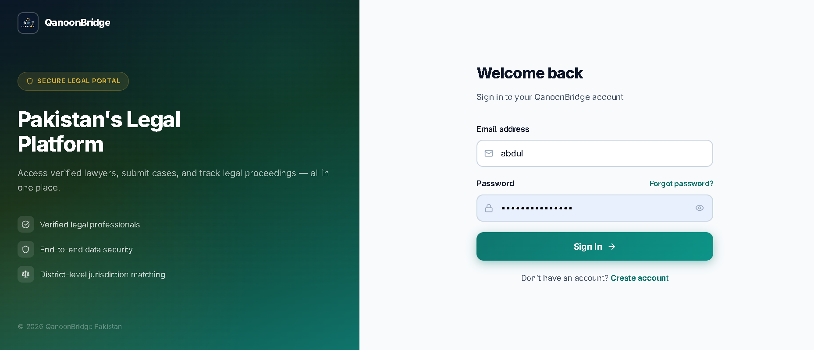
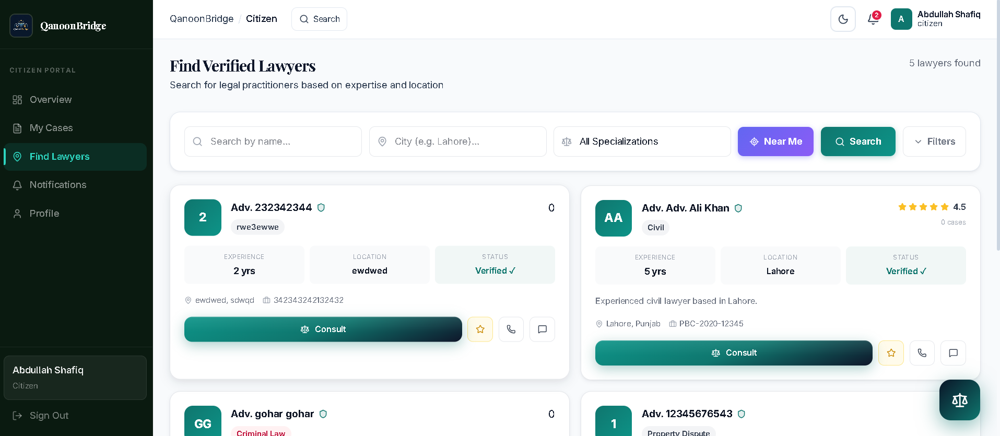

A justice problem, not just a software problem.
Access to legal help in Pakistan is unevenly distributed. Citizens in smaller cities and districts often don't know a single lawyer who handles their kind of case, and legal aid organizations have no structured way to route the right case to the right professional — nearby, verified, and available.
I wanted my final year project to be more than a CRUD app with a login page. I wanted to build something with real architectural weight: a system that could actually be handed to a law firm or an NGO and operate as a product, not a demo. That decision shaped everything that followed — multi-tenancy instead of a single hardcoded organization, granular role-based access instead of an "admin flag," and a real geographic matching engine instead of a static lawyer directory.
That meant starting with architecture decisions most student projects skip entirely: how does one platform serve many independent organizations without leaking data between them? How do four very different user types — citizens, lawyers, admins, and a super admin — share one codebase without stepping on each other's permissions? And how does "nearby" get defined precisely enough to be useful in a country where "nearby" can mean a different city, district, or province depending on where you stand?
Legal aid matching is a routing problem in disguise.
On the surface it looks simple: a citizen has a legal issue, a lawyer can help, connect them. In practice, every one of those steps has failure modes that a real platform has to design around.
- Citizens search social media or ask around for "a lawyer"
- No way to verify a lawyer's credentials before contact
- No structured intake — details get lost between phone calls
- Cases assigned by whoever happens to be free, not by area or specialty
- NGOs handling similar cases across districts never see the pattern
- No audit trail of who touched a case or when
- Every organization builds its own spreadsheet from scratch
- Structured case submission with category, priority, and location
- Lawyers verified by admins before appearing to citizens
- Geofenced matching: same city first, then district, then province
- Admin-driven assignment with proximity + specialization ranking
- Case aggregation groups similar cases across a region for batch handling
- Full audit log on every sensitive action, per tenant
- One platform, isolated per organization, ready to onboard instantly
From schema design to a working four-role platform.
I treated this like a production system from the first migration, not a prototype I'd clean up later. That meant designing the database and permission model before touching a single dashboard screen.
tenant_id, scoped automatically through middleware rather than trusted to individual queries. Seeded default roles, permissions, a demo tenant, and Pakistan's geographic zones (province → division → district → city).
roles → role_permissions → permissions mapping table — so granting a new capability to a role never requires a code deploy. Wired up protected routes on the frontend with role-aware redirects.
One platform, four very different experiences.
Every role sees a dashboard shaped around what they're actually trying to do — a citizen tracking a single case, a lawyer scanning nearby opportunities, an admin running a whole tenant, or a super admin watching the entire platform. Screenshots below are placeholders — drop in your real dashboard captures here for each role.




Permissions designed at the data layer, not the UI layer.
The temptation in a student project is to hide an admin button behind an if (user.isAdmin) check and call it RBAC. QanoonBridge stores permissions as data — a role_permissions mapping table joined against granular resource.action permissions — so the same middleware enforces access identically whether the request comes from the web app, a future mobile client, or a direct API call.
| Permission | Citizen | Lawyer | Admin | Super Admin |
|---|---|---|---|---|
| Submit a case | ✓ | — | — | — |
| Browse available cases | — | ✓ | ✓ | ✓ |
| Verify lawyers | — | — | ✓ | ✓ |
| Aggregate cases by region | — | — | ✓ | ✓ |
| Manage tenants | — | — | — | ✓ |
| View platform-wide analytics | — | — | — | ✓ |
Every table in the schema — cases, documents, comments, aggregations, audit logs — also carries its own tenant_id, so isolation isn't a single filter you can forget to add; it's structurally present at every join.
The matching engine: how "nearby" actually gets decided.
The most interesting engineering problem in this project wasn't CRUD — it was ranking. When a citizen submits a case, the system has to decide, in order, which lawyers are worth suggesting first, using imperfect and sometimes incomplete location data.
Citizen submits case (city, district, province, category)
│
├── Step 1: Query lawyer_profiles
│ WHERE service_city = case.city
│ AND specialization ~ case.category
│ AND verification_status = 'verified'
│ ORDER BY rating DESC, experience_years DESC
│
├── Step 2: Insufficient results? → expand to service_district
├── Step 3: Still insufficient? → expand to service_province
│
├── Step 4: If lat/long available on both sides
│ → Haversine distance calculation within lawyer.max_radius_km
│
└── Merge + rank → distance tier → specialization match
→ rating → availability → suggested to Admin
The tricky part wasn't the Haversine formula — it was designing for the common case where coordinates aren't available. Most citizens filing a case from a small town supply a city name, not GPS coordinates. So the ranking had to degrade gracefully through a zone hierarchy — city → district → division → province — rather than assuming precise coordinates would always exist. I modeled that as a separate geographic_zones reference table seeded with Pakistan's actual province/division/district/city structure, so text-based location matching stays reliable even without coordinates.
A case is never just "open" or "closed."
Early versions of the schema had a three-state case status: submitted, in progress, resolved. It fell apart the moment I mapped it against how legal aid organizations actually work — cases get rejected as duplicates, get grouped with similar cases before a lawyer ever sees them individually, and sometimes get filed as part of a batch rather than resolved one by one.
Modeling this as a proper state machine — with explicit transition rules for who can move a case from one status to the next — meant the frontend never has to guess what actions are valid. The backend simply refuses any transition that isn't in the allowed table.
The stack behind the platform.
Where the design actually got tested.
tenant_id correctly on the primary table of a query but missed it on joined tables — a case-comments query, for instance, filtered cases by tenant but not the comments themselves, which is exactly the kind of gap that looks fine until a second tenant is added.tenant_id directly to every dependent table (documents, comments, service areas) rather than relying on a join back to cases, and wrote a dedicated test suite that creates two tenants and asserts zero cross-visibility on every endpoint.rbacGuard(permission) middleware that reads from the database-backed role_permissions table, so adding a new permission is a seed-data change, never a code change.While QanoonBridge was a final-year project, I also built an entire ISP sales CRM for a USA-based company from a blank repo to App Store in 6 months.
Think multi-tenant architecture is complex? Wait till you see commission payroll with holdbacks, AI-powered OCR receipt scanning on a live iOS app, and 10,000-row CSV imports chunked through background queues. Different domain. Same engineering discipline.
Read the ISP Sales Platform Case Study →Full ownership, start to finish.
What building this taught me about real systems.
1. Isolation is a property of every query, not a feature.
Multi-tenancy isn't a checkbox you add once — it's a discipline you apply to every single table and every single join, forever. The moment you treat it as "done," it's the moment a leak slips through.
2. Permissions belong in data, not in code.
Hard-coded role checks feel faster to write on day one and become a liability by week three. Storing permissions as rows means the system can grow new roles and capabilities without a redeploy.
3. "Nearby" needs a fallback chain, not a formula.
Precise geolocation is the exception, not the rule, in real-world data. Designing the degraded path — city, then district, then province — mattered more than the distance math itself.
4. A workflow is a state machine, whether you draw it that way or not.
Cases don't move linearly from open to closed. Modeling the actual branches — rejected, aggregated, filed — up front saved me from a rewrite later.
Beyond the grade — a platform an NGO could actually use.
A graduation project built like a product.
QanoonBridge started as a final year requirement and became the project that taught me how to think in systems — tenants, roles, permissions, and geography as first-class design decisions rather than afterthoughts bolted onto a CRUD app.
I designed the schema before the UI, the permission model before the dashboards, and the matching engine's fallback chain before its formula. That ordering — architecture first, screens second — is the single biggest difference between a project that demos well and one that could actually be handed to an organization and run.
Other systems I've built.
Each project pushed me into different engineering territory. Here's what else I've shipped — all production, all end-to-end.
Need a system designed with this level of rigor?
I work best with founders and organizations who value real architecture over quick fixes. Let's talk.